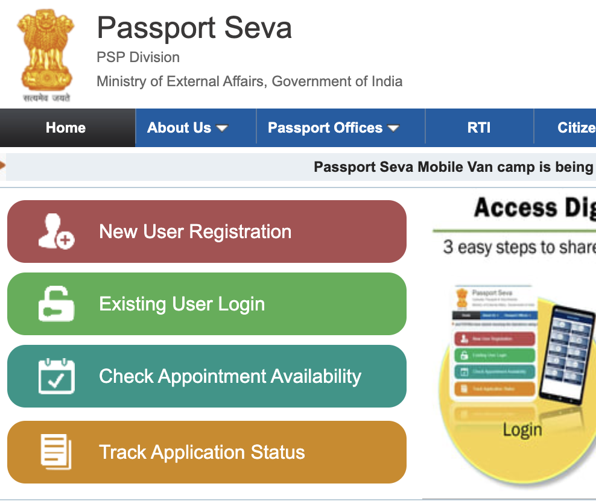

Keeping a list of public notes, that I found interesting or useful in my day to day work.
Cloudflare makes cloudflared available for tunneling purpose.
sudo pacman -Sy cloudflaredcloudflared tunnel --url http://localhost:3000https://pollution-lmao-occasions-dracony.trycloudflare.comPublished: 2024-11-26
In this post, I share how I automated checking for passport application status using clojure from scratch.
My whole family has applied for new passports, and I want to know the application status. But every time I open the website, I feel like giving up on life.
What could be worse, you say? Well, doing it four times.
Now, I use Check Application Status option on the homepage. It's an optimization by storing File Numbers and Date of Births in my BitWarden extension. That helps avoid having to fill the Captcha and logging in multiple times. It still hurts, albeit a bit less.
I abhor the 2 minutes, I spend each time I have to check the status. So, I'll spend next 5 hours setting up an automation script to notify me every 3 hours.
I will need the following:
This is how it's going to work:
I start by defining the deps.edn file in the project root. This is the beginning of the project. deps.edn will contain the project dependencies and configuration for build and release.
Which dependencies will I need?
deps.edn file looks like the following:
; deps.edn
{:paths ["src"] ; Where the source code lives
:deps {clj-http/clj-http {:mvn/version "3.13.0"} ; HTTP Client
org.clj-commons/hickory {:mvn/version "0.7.5"} ; HTML Parser and Selector
cheshire/cheshire {:mvn/version "5.13.0"}} ; JSON encoder/decoder
:aliases {:dev {:extra-paths ["env/dev"] ; dev environment config
:extra-deps {nrepl/nrepl {:mvn/version "1.3.0"}} ; nrepl server development
:main-opts ["-m" "nrepl.cmdline"]} ; Options for main function in `dev` alias
:prod {:extra-paths ["env/prod"]} ; Prod config
:passport {:exec-fn passport-status/execute!}}} ; Alias to execute actual flow
Now I can start the REPL server by executing the following command in the terminal:
$ clj -M:dev
As an output of the command, I'll get the nrepl-port that I can use to connect to the REPL server from the editor. I can also use the .nrepl-port file created by the above command.
I also create the following directory structure:
➜ automations git:(master) ✗ tree .
.
├── deps.edn
├── env
│ ├── dev
│ │ └── config.clj
│ └── prod
│ └── config.clj
└── src
├── passport_status.clj
└── telegram.clj
4 directories, 5 files
src/passport_status.clj contains all the logic related to passport status fetchingsrc/telegram.clj contains all the logic to interact with telegramTo find out how to extract passport application information, I manually go through the process.
Track Application Status button on the left.
File Number and Date of Birth, and type of service.Track Status. I notice the following request being sent in the browser's network tab (Copied in the curl format):curl 'https://passportindia.gov.in/AppOnlineProject/statusTracker/trackStatusInpNew' \
-H 'Accept: text/html,application/xhtml+xml,application/xml;q=0.9,image/avif,image/webp,image/apng,*/*;q=0.8,application/signed-exchange;v=b3;q=0.7' \
-H 'Accept-Language: en-US,en;q=0.9,hi-IN;q=0.8,hi;q=0.7' \
-H 'Cache-Control: max-age=0' \
-H 'Connection: keep-alive' \
-H 'Content-Type: application/x-www-form-urlencoded' \
-H 'Cookie: JSESSIONID=<*******************>' \
-H 'DNT: 1' \
-H 'Origin: https://passportindia.gov.in' \
-H 'Referer: https://passportindia.gov.in/AppOnlineProject/statusTracker/trackStatusInpNew' \
-H 'Sec-Fetch-Dest: document' \
-H 'Sec-Fetch-Mode: navigate' \
-H 'Sec-Fetch-Site: same-origin' \
-H 'Sec-Fetch-User: ?1' \
-H 'Upgrade-Insecure-Requests: 1' \
-H 'sec-ch-ua-mobile: ?0' \
--data-raw 'apptUrl=&apptRedirectFlag=&optStatus=Application_Status&fileNo=<********>&applDob=<DD/MM/YYY>&rtiRefNo=&diplArnNo=&appealNo=&appealDob=&action%3AtrackStatusForFileNoNew=Track+Status'
Ahah, can I just send it over again and get the same response? Hell yeah. When I execute the above command on terminal, I get an HTTP response. (Thank God, for no Captcha)
Perfect. Now, let's also try without all those unnecessary headers and data in request body. Turns out we just need to send the request body:
{
"optStatus": "Application_Status",
"fileNo": "ABC**********",
"applDob": "DD/MM/YYYY",
"action:trackStatusForFileNoNew": "Track Status"
}
That really simplifies the problem.
Let's start by fetching the response. This code goes in src/passport_status.clj.
(ns passport-status
(:require [clj-http.client :as http]))
;; Data for each passport application
(def details
[{:file-num "ABC234324234"
:dob "15/09/1992"}
{:file-num "ABC234324234"
:dob "24/11/1987"}
{:file-num "ABC234324234"
:dob "10/01/1971"}
{:file-num "ABC234324234"
:dob "19/02/2001"}])
;; URL to fetch passport application status
(def ^:private url
"https://www.passportindia.gov.in/AppOnlineProject/statusTracker/trackStatusInpNew")
;; Function that sends a POST request to the above URL
;; And fetches the actual HTML response
(defn- fetch-resp [{:keys [file-num dob]}]
(http/post url {:form-params {:optStatus "Application_Status"
:fileNo file-num
:applDob dob
:action:trackStatusForFileNoNew "Track Status"}}))
The above code, should help me fetch the response from the server. Now it's time to parse the response and extract the structured information.
I am inspecting the web page source in the browser's developer tools. The information is in the following structure:
<div class="hd_blue">
<table>
<tbody>
<tr>
<td>
<table>
<tbody>
<tr>
<td> <-- This is what we need
<tr>
<td> <-- This is what we need
<tr>
<td> <-- This is what we need
Hickory makes it super easy to select those elements with it's hickory.select functions.
(ns passport-status
(:require [clj-http.client :as http]
[hickory.core :as h]
[hickory.select :as s]))
;; Omitted code
;; Selecting required data from hickory format
(defn- select-data [hickory]
(->> hickory
(s/select (s/follow-adjacent (s/class "hd_blue") (s/tag :table))) ; selects element with class `hd_blue` and moves to the adjacent `table` element.
first ; Gets the first such element
(s/select (s/child (s/tag :table) ; Traverses the heirarchy shown in the previous code snippet
(s/tag :tbody)
(s/tag :tr)
(s/tag :td)
(s/tag :table)
(s/tag :tbody)
(s/tag :tr)
(s/tag :td)))
(mapcat (fn [td] ; From here on, we are just extracting the text from the `td`s (Unintended)
(:content td)))
(partition-all 2)
(take 7)))
Next step is to setup a bot for telegram, that will send up messages with data extracted in the previous steps. I chose telegram over whatsapp because of the simplicity of using its APIs.
I need a bot that authenticates me to use telegram APIs and a channel where the bot will send me messages. I can have the bot send messages to me personally, but I'll have it send to a channel, so that all the members of the channel can see the updates.
Telegram has a special bot that creates other bots. It's rightly named the @BotFather. Sending a /help message lists all the available commands to interact with it. Most important for us is the /newbot command. This command triggers a flow to create new bot and asks a few questions related to it.
botOnce the bot is created, it sends a welcome message with the bot token and a link to chat with the bot. Bot token will be used to authenticate requests to the telegram API.
I'll also create a private channel and add the bot to it as an admin.
Now, that I have the bot token and created the channel. I need the channel_id to send the message to the channel. It's hard to find it on the telegram app or website. The way we'll do it is by using getUpdates API endpoint. This endpoint returns the data that bot has received using the long polling method. The data contains the channel_id as well.
First step is to send a message in the channel I created, for the bot to receive it as update. So, I send a hi message in the telegram channel. To get the updates, I'll use the repl:
(require '[clj-http.client :as http])
(require '[cheshire.core :as json])
(def bot-token "<the-bot-token-from-previous-steps>")
(-> (str "https://api.telegram.org/bot" bot-token "/getUpdates")
(http/get {:headers {:content-type "application/json"}})
:body
(json/parse-string))
; {"ok" true,
; "result"
; [{"update_id" 242976779,
; "channel_post"
; {"message_id" 8,
; "sender_chat"
; {"id" <chat-id>, "title" "Bot Devel", "type" "channel"},
; "chat"
; {"id" <chat-id>, "title" "Bot Devel", "type" "channel"},
; "date" 1731041338,
; "text" "hi"}}]}
The response is shown above. I get the <chat-id> from there, and save it for later use. Test sending the message by:
(def chat-id 1234434) ; Replace this with <chat-id>
(-> (str "https://api.telegram.org/bot" bot-token "/sendMessage")
(http/post {:headers {:content-type "application/json"}
:body (json/encode {:chat_id chat-id
:text "Hello"})}))
I get a Hello text on the telegram channel. Ready to assemble the telegram.clj file.
(ns telegram
(:require [clj-http.client :as http]
[cheshire.core :as json]
[config :as cfg]))
(def ^:private bot-url
(str "https://api.telegram.org/bot" (-> cfg/telegram :bot-token)))
(defn- telegram-url [method]
(case method
:send-message (str bot-url "/sendMessage")
:get-updates (str bot-url "/getUpdates")))
(defn- channel-id [channel]
(or (get-in cfg/telegram [:channel-ids channel])
(when (= cfg/env :dev)
(get-in cfg/telegram [:channel-ids :default]))))
(defn send-message! [channel message]
(http/post (telegram-url :send-message)
{:headers {:content-type "application/json"}
:body (json/encode {:chat_id (channel-id channel)
:text message
:parse_mode "HTML"})}))
config namespace comes from env/dev/config.clj file. The structure looks something like the following:
(ns config)
(def telegram
{:bot-token "<bot-token>"
:channel-ids {:default <chat-id>}})
(def env :dev)
env/prod/config.clj will have the same structure with prod related config.
The final passport-status namespace looks like the following, with some missing pieces and them integrated.
(ns passport-status
(:require
[clj-http.client :as http]
[hickory.core :as h]
[hickory.select :as s]
[clojure.string :as str]
[telegram :as tg]))
(def details
[{:file-num "ABC234324234"
:dob "15/09/1992"}
{:file-num "ABC234324234"
:dob "24/11/1987"}
{:file-num "ABC234324234"
:dob "10/01/1971"}
{:file-num "ABC234324234"
:dob "19/02/2001"}])
(def ^:private url
"https://www.passportindia.gov.in/AppOnlineProject/statusTracker/trackStatusInpNew")
(defn- fetch-resp [{:keys [file-num dob]}]
(http/post url {:form-params {:optStatus "Application_Status"
:fileNo file-num
:applDob dob
:action:trackStatusForFileNoNew "Track Status"}}))
(defn- select-data [hickory]
(->> hickory
(s/select (s/follow-adjacent (s/class "hd_blue") (s/tag :table)))
first
(s/select (s/child (s/tag :table)
(s/tag :tbody)
(s/tag :tr)
(s/tag :td)
(s/tag :table)
(s/tag :tbody)
(s/tag :tr)
(s/tag :td)))
(mapcat (fn [td]
(:content td)))
(partition-all 2)
(take 7)))
(defn- format-message [data]
(->> data
(map (fn [[key val]]
(format "<b>%s</b>: %s" (str/trim key) (str/trim val))))
(str/join "\r\n")
(str "<b><u>" (java.time.LocalDate/now)
" " (-> (java.time.LocalTime/now)
str
(str/split #"\.")
first)
"</u></b> \r\n")))
(defn ^:export execute! [& _]
(->> details
(pmap (fn [info]
(-> (fetch-resp info)
(:body)
(h/parse)
(h/as-hickory))))
(pmap select-data)
(pmap format-message)
(pmap #(tg/send-message! :infinite %))
(doall)))
Understanding the above code is left as an exercise to the reader. From the passport-status ns, I just need to call the telegram/send-message! with the channel and formatted message data.
Now, I need a way to setup a job that runs every 3 hours or so. I'll use an EC2 instance on AWS that I already use to host my personal projects.
First, I copy the project to the EC2 machine. Then, I use systemd timers for job scheduling because of its simple syntax and configuration.
I create two files for systemd config.
passportstatus.service: keeps the config about what commands to run that will execute the passport-status/execute! function.passportstatus.timer: keeps the timer configuration, when to run the job and how often.[Unit]
Description="Passport Fetch status"
[Service]
WorkingDirectory=/home/user/automation
ExecStart=/bin/bash -c "/usr/local/bin/clojure -X:prod:passport"
[Unit]
Description="Run a job to fetch passport status."
[Timer]
OnStartupSec=5seconds
OnBootSec=5min
OnUnitActiveSec=24h
OnCalendar=*-*-* 09/3:00:00 # Runs every three hours starting at 9 AM.
Unit=passportstatus.service
[Install]
WantedBy=multi-user.target
Create softlinks to these files in /etc/systemd/system directory. And enable the passportstatus.timer unit by:
$ sudo systemctl enable passportstatus.timer
It was a fun little project, that would have taken a few days for me to finish, just a few months back. This exercise boosted my confidence in executing a project from scratch in clojure and getting to deployment. This is just the start of more automations, that'll come in the future.
Thanks for reading and stay tuned for more.
Published: 2024-11-07
Tagged: automation clojure fun
Never before, this month of August 2024, had I given importance to a soul's departure. The emotion was that of indifference. A straight faced response of "So what". So what if they died. It's the natural order of life. One of the pre-requisites to life, is the fate of an end.
This was, until I lost someone close. Someone, I loved, respected and adored. My grandfather, one of the rare men that my heart has deep respect for. I never could fathom the pain, his departure broght. Although the pain was extreme, I had experienced it before in a different shade of black. It wasn't that of a death but a loss, nonetheless.
My grandfather, Mahipat Singh Patel, teacher, a man of few words and a strong character, left us in the morning of August 4th, 2024. His departure was painless, yet the journey to that point was filled with suffering. My heart breaks when I think about his last few weeks, yet I am thankful that he didn't suffer more. Dadaji, you are in a better place, I just miss your presence in my life. I already miss, just existing alongside you.
We spoke rarely, more rare were our meaningful conversations. You didn't express yourself, as much as I would want to understand you. You were quiet and quite consistent. A simple man, who realised the truth of his life. You tried to fulfill our wishes, without having any expectation.
You sat outside our home and watched people passing by. Some would wish you the time of day, others just pass and still others touch your feet. You would notice them passing by, responding to their wishes in return. After a while, you would return back to your thoughts. I miss these ordinary events of our lives.
I only have one regret. You never depended on anyone all your life. In the last 3 months, you completely gave off responsibility of your life to us, me in particular. I failed at that. I am sorry. You didn't deserve to go this soon. I miss you
You did more than your duties. You gave more than you had. You cared more than what was asked of you. I promise to follow your footsteps.
ॐ शांति! ॐ शांति! ॐ शांति!
Published: 2024-08-10
Tagged: family